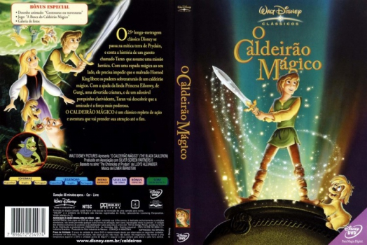
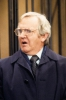

Outro Título:The Black Cauldron
País:United States, 80 minutos
Idiomas falados:Espanhol, Inglês, Português
Gênero(s):Animação, Aventura, Família, Fantasia
Diretor(s):Ted Berman, Richard Rich
Escritor(es):Lloyd Alexander
Codec:MPEG-2 (DVD)
Número: 5835


Certificado:
Sinopse:
Taran é um cuidador de porcos com sonhos de se tornar um grande guerreiro. No entanto, ele tem que deixar seu sonho de lado quando um porco chamado Hen Wen é sequestrado por um senhor maligno conhecido como Rei Chifrudo. O vilão espera que Hen mostre o caminho para o Caldeirão Negro, que tem o poder de criar um gigantesco exército de soldados invencíveis.
Elenco: 


Tipo de mídia: DVD5,
Legendas: Espanhol, Inglês, Português, Sem Legendas
Alugado: Não
Tela: Anamorphic Widescreen